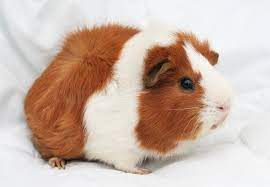

Een Introductie
Cavia's, ook Guinese biggetjes genoemd, zijn een geslacht van de Zuid-Amerikaanse knaagdieren uit de familie Caviidae. Ze worden in bepaalde Zuid-Amerikaanse landen als voedseldier gefokt. In de meeste andere landen zijn ze tamelijk populaire huisdieren, omdatg ze makkeliijjk te behouden zijn.
De naam 'Guinees biggetje' die ook nog in het Engelse guinea pig te herkennen is, is misleidend. Cavia's zijn niet verwant aan varkens en komen uit Zuid-Amerika terwijl Guinea in Afrika ligt. De naam 'cavia' komt uit het Latijn, en is ook nog steeds modern-Latijnse wetenschappelijke naam voor dit genus van diersoorten. Ook in de namen van de bovenliggende familie 'caviinae' (echte cavia's) en van de daarboven liggende familie 'caviidae' (cavia-achtigen) komt het woord terug. Het woord 'cavia' zou afkomstig kunnen zijn van 'cavum', het Latijnse woord voor een hol of holte. Veel caviasoorten leven in het wild immers in holen. Het woord 'cabiai' wordt gebruikt in het Galibi; een taal van de Karaïbische volken in het noorden van Zuid-Amerika.
Overigens komt de associatie met varkens ook nog terug in de wetenschappelijke naam voor de huiscavia, Cavia porcellus. Porcellus is Latijn voor 'klein varkentje' (het Latijnse woord voor 'varken' is porcus).
Via Nederland is de cavia in Indonesië terecht gekomen. Daar noemt men een cavia een tikus Belanda wat 'Nederlandse muis' betekent. Ook wordt soms de term marmut gebruikt. Ook dit heeft een link met Nederland. Vroeger, en door sommige mensen nog steeds, wordt een cavia namelijk wel misleidend een marmot genoemd, terwijl dat een andere, niet nauw aan de cavia verwante diersoort is.